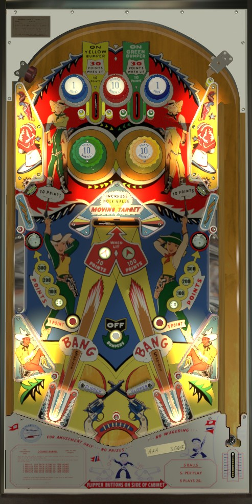

One of the two top lanes is always lit. A lit lane is indicated by the two passive bumpers on either side of that lane being lit. These lanes score 10 points, or 30 when lit. The left and right top lanes also always light the yellow and green pop bumpers respectively, whether the lanes themselves are lit or not.
The standup targets on the sides of the game score 10 points.
The swinging target scores 30 or 100 points. It alternates between these two values after every 5th activation of either of the 1-point passive bumpers at the top of the game or either of the 1-point rollover buttons near the slingshots.
The gobble holes start with a value of 30 points. Hits to the swinging target increase the value of one gobble hole to 100, then 200, then 300 points. Making one of the top 1-point passive bumpers or one of the 1-point rollover buttons near the slingshots alternates which gobble hole has increased value; the other will always be 30 points.
There are no in or out lanes. Behind the flippers are the Bang launchers, which score 5 points and fire the ball toward the center swinging target. Some copies of the game have a center post between and below the flippers, but others do not. The ball can only drain between the flippers or down a gobble hole.
There is no end of ball bonus, extra ball feature, or playfield Special. Tilt ends game; in a 2-player game, only the player who tilted forfeits the rest of their game.
The below picture of Double Barrel's playfield was taken from the VPX recreation by Jino0372.
